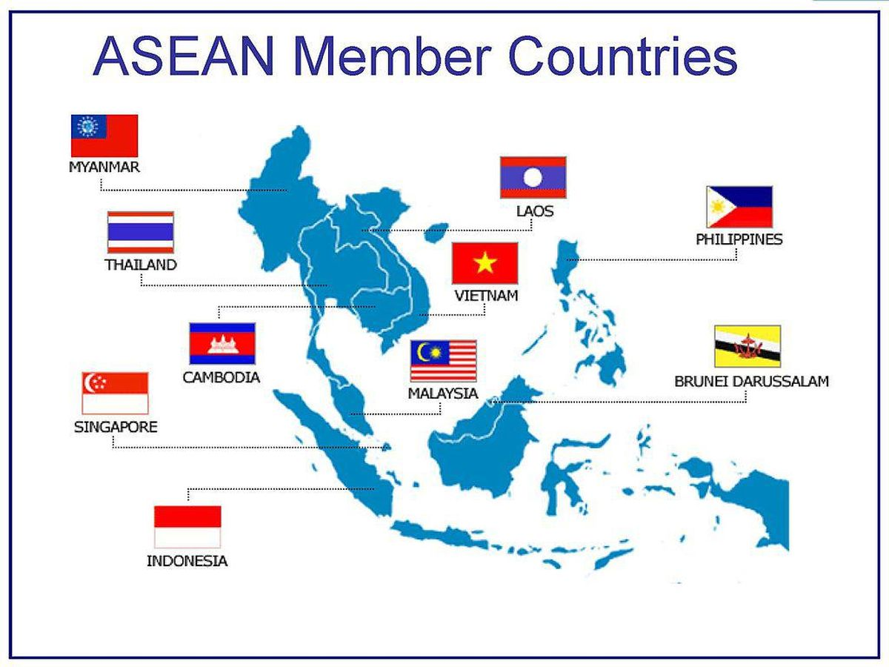

dari https://www.gramedia.com/literasi/kerjasama-regional/
Kerjasama regional adalah bentuk kolaborasi antara beberapa negara yang berada di kawasan geografis yang sama dengan tujuan untuk mencapai manfaat bersama. Negara-negara dalam kerjasama regional sering memiliki tantangan dan tujuan yang serupa, yang membuat kolaborasi ini sangat efektif. Contohnya, ASEAN (Association of Southeast Asian Nations) adalah organisasi regional di Asia Tenggara yang mencakup negara-negara seperti Indonesia, Malaysia, Thailand, dan lainnya. ASEAN bekerja sama dalam berbagai bidang seperti ekonomi, keamanan, sosial, dan budaya. Dalam konteks pendidikan, ASEAN University Network (AUN) adalah salah satu inisiatif untuk meningkatkan standar pendidikan tinggi melalui pertukaran pelajar dan staf pengajar serta kolaborasi penelitian. Kerjasama regional ini memungkinkan negara-negara anggota untuk berbagi sumber daya, pengetahuan, dan teknologi. Dengan bekerja bersama, negara-negara dalam kerjasama regional dapat mengatasi isu-isu yang lebih besar dan kompleks, seperti perubahan iklim, kesehatan masyarakat, dan perdagangan internasional. Contohnya, ASEAN juga berperan dalam memastikan bahwa pendidikan tentang perubahan iklim menjadi bagian dari kurikulum sekolah untuk meningkatkan kesadaran dan tindakan di tingkat lokal. Kerjasama regional juga dapat meningkatkan stabilitas dan perdamaian di kawasan tersebut. Dengan membangun hubungan diplomatik yang kuat dan menyelesaikan konflik melalui dialog dan negosiasi, negara-negara dalam kerjasama regional dapat menciptakan lingkungan yang lebih damai dan stabil. Menurut saya, kerjasama regional sangat penting untuk menciptakan dunia yang lebih baik dan berkelanjutan. Ketika negara-negara bekerja sama, mereka dapat mencapai tujuan yang tidak bisa dicapai sendiri-sendiri. Selain itu, melalui kerjasama regional, negara-negara dapat memastikan bahwa tidak ada satu pun negara yang tertinggal dalam mencapai pembangunan berkelanjutan.

Diambil dari https://www.detik.com/jabar/berita/d-6144172/daftar-negara-asean-dan-profil-lengkapnya